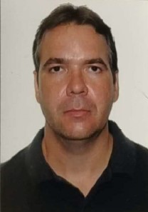

Nome completo: Felipe Nogueira Furtado
Idade: 46 anos
Data de nascimento: 05/05/1979
Cidade: Uberlândia – MG
E-mail: felipenogueira.furtado@gmail.com
Telefone: (32) 99146-1964
Me chamo Felipe e sou estudante de Sistemas para Internet. Tenho grande interesse em desenvolvimento web e tecnologia. Sou uma pessoa curiosa, dedicada e sempre em busca de aprender coisas novas.
2026 - Cursando
Instituto Federal do Triângulo Mineiro - IFTM — Uberlândia, MG
2019 - 2021
UNICESUMAR — Modalidade EAD - Pólo:Uberlândia, MG
1995 - 1998
Escola Estadual Prof. Jamil El-Jaick — Nova Friburgo, RJ
2017 - 2019
Escola Politécnica Brasileira — Modalidade EAD
Nov 2020 – Atual
Set 2010 – Jan 2017
Clique aqui para assistir o vídeo